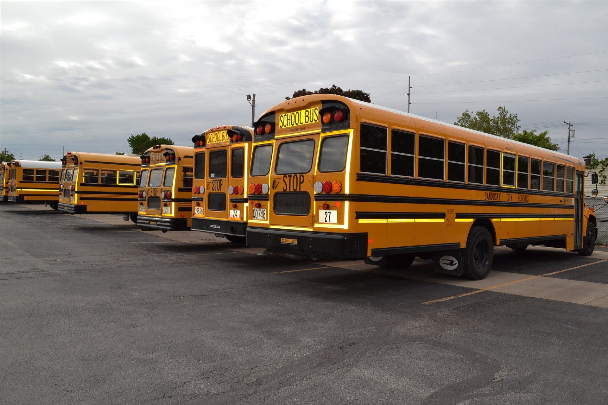

Without taking proper precautions, reopening schools carries some big risks
It’s one of the most tired tropes in TV and movies.An expert, usually a scientist or doctor, desperately tries to get the authorities to take an impending disaster seriously.They are ignored until it is too late and heroic action is needed to save the day.As hackneyed as that plot device is, it’s the exact situation that many students, parents, and teachers are finding themselves in right now.
The World Health Organization and the Centers for Disease Control and Prevention have set clear recommendations for how schools can reopen safely, covering everything from the level of community spread where the school is located to how mask-wearing, physical distancing, and testing is handled within the school.Without these prerequisites for opening and precautions after opening, our schools are at risk of becoming super-spreader sites, with children, teachers, and staff getting infected and bringing COVID-19 home with them.
However, too many school districts in Ohio are ignoring or short-cutting these recommendations when implementing their school reopening plans.That’s why I’m hearing so many concerns from Ohio teachers, counselors, school nurses, librarians, paraprofessionals and school support staff.
The most widespread concern, as shown in a recent survey of our members who work in K-12 education, was not about the respondent’s own health or even their family’s health.The concern was the overall impact on public health in the community if school reopening is handled poorly.Our members are not frightened or lazy, as the enemies of public education are claiming.Rather, they are selflessly standing up and fighting for what they know is best for their community and for their students.
As a union, we are ready to support each other in these struggles for safety and justice.Our national union, American Federation of Teachers, passed a strong resolution last month that affirms, 'Nothing is off the table when it comes to the safety and health of those we represent and those we serve, including supporting local and/or state affiliate safety strikes on a case-by-case basis as a last resort.'At the state level, we are supplying our local leaders with an action toolkit to help them spot and report unsafe conditions in their schools.
Safe reopening plans will look different across the state.In some districts, a hybrid schedule that combines in person and virtual education may be a safe model, while in many districts, fully remote learning is the only safe option.What is clear, is that we can not do business as usual.We’re seeing that as students in other states begin to return and clusters of the virus quickly appear and necessitate closing the schools or quarantining whole classes.We want nothing more than to return to our classrooms with our students, but we can only do that when it’s safe.
We’re clear-eyed about the downsides and limitations of remote learning.We know that it heightens the inequities in our education system, disproportionately hurting students who lack access to technology, lack a stable home environment, or receive supportive services at school.We also know that being back in school, among their peers, is important for our students’ social and emotional health.
Even considering those downsides, two-thirds of teachers and staff who responded to our survey said they felt most comfortable with a fully remote start to the school year.Only 8% opted for a full return to school.
Educators have been using the phrase 'Maslow before Bloom' to explain their decision-making process during this difficult time, meaning they are prioritizing Abraham Maslow’s hierarchy of needs over Benjamin Bloom’s Taxonomy of Educational Objectives.If our students aren’t healthy, they can’t learn, if our students are in trauma because of coronavirus deaths in their family, they can’t learn, and if our students are not alive, they most certainly can’t learn.
Thankfully, children are much less likely than adults to get seriously ill or die from COVID-19, though they certainly aren’t 'almost immune,' as President Trump has said without any evidence.But what happens in our schools doesn’t stay in our schools, and that’s why teachers will continue to raise the alarm about incautious school reopening plans.
This isn’t a movie.In real life you can’t ignore the science, ignore the experts, and ignore the apprehension of frontline workers, and still have a good outcome.We’re looking forward to eventually being back in class with our students, but for the good of our communities, we’re going to fight to make sure that doesn’t happen prematurely.
Posted On: 2020-08-21T00:00:00
Posted By: Melissa Cropper

Content Date: 2020-08-21
Download Date: 2021-05-13
Document ID: L0C04C0KV